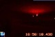
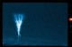
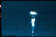
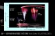

電子相簿

2004年6月18日UT紅色精靈及精靈暈盤.jpg
3.22 KB
2006年6月10日UT單一蘿蔔狀紅色精靈發生於太平洋.jpg
1.77 KB
2006年7月7日 UT藍色噴流於鹿林山天文台.jpg
5.20 KB
中華衛星二號每繞地球一圈，就可以在背對太陽的地區觀測紅色精靈（成功大學物理系紅色精靈研究團隊提供）- 2.jpg
7.95 KB
中華衛星二號（國科會太空計畫室提供） - 3.jpg
9.38 KB

巨大噴流1成大團隊在2002年7月22日.jpg
9.74 KB

巨大噴流2成大團隊在2002年7月22日.jpg
3.94 KB
淘氣精靈1 成大物理系 紅色精靈研究團隊於南海上空.jpg
7.56 KB

高空短暫發光現象分類圖.jpg
17.11 KB